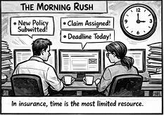
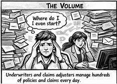
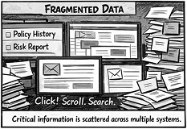
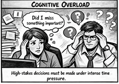

Problem Statement




How might we reduce cognitive load for underwriters and claims adjusters by simplifying complex data into clear, actionable insights—without disrupting their existing workflows?